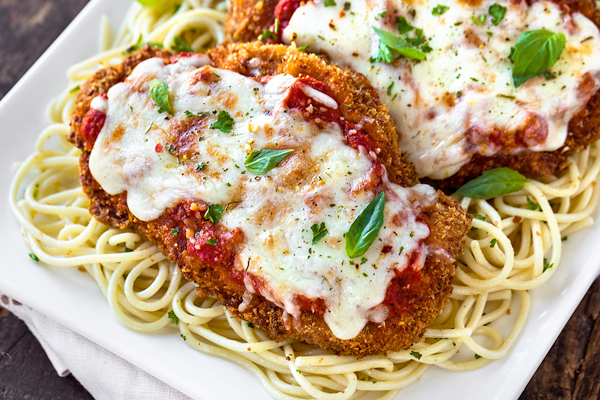

Home
Chicken Parmesan

Description
Chicken parmesan is a dish that consists of breaded chicken breast covered in tomato sauce and mozzarella, parmesan, or provolone cheese. A quantity of ham or bacon is sometimes added.
Ingredients
- boneless chicken breast
- salt & ground black pepper
- eggs
- bread crumbs
- parmesan cheese
- flour
- olive oil
- tomato sauce
- basil
Steps
- Preheat an oven to 450 degrees F (230 degrees C).
- Place chicken breasts between two sheets of heavy plastic (resealable freezer bags work well) on a solid, level surface. Firmly pound chicken with the smooth side of a meat mallet to a thickness of 1/2-inch. Season chicken thoroughly with salt and pepper
- Beat eggs in a shallow bowl and set aside
- Mix bread crumbs and 1/2 cup Parmesan cheese in a separate bowl, set aside
- Place flour in a sifter or strainer; sprinkle over chicken breasts, evenly coating both sides
- Dip a flour-coated chicken breast in beaten eggs. Transfer breast to the bread crumb mixture, pressing crumbs into both sides. Repeat for each breast. Let chicken rest for 10 to 15 minutes
- Heat 1/2 inch olive oil in a large skillet on medium-high heat until it begins to shimmer. Cook chicken in the hot oil until golden, about 2 minutes per side. The chicken will finish cooking in the oven
- Transfer chicken to a baking dish. Top each breast with 2 tablespoons tomato sauce. Layer each chicken breast with equal amounts of mozzarella cheese, fresh basil, and provolone cheese. Sprinkle remaining Parmesan over top and drizzle each with 1/2 teaspoon olive oil
- Bake in the preheated oven until cheese is browned and bubbly and chicken breasts are no longer pink in the center, 15 to 20 minutes. An instant-read thermometer inserted into the center should read at least 165 degrees F (74 degrees C).